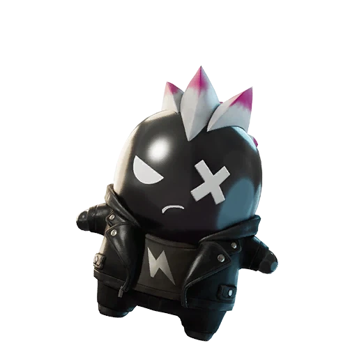

Fortnite Sprite · Legendary
Punk Sprite in Fortnite: Rarity, Ability, Variants and Drop Rates
Can trigger infinite ammo effects. Find it, extract it, and track every Punk variant on the FORTNITE SPRITES TRACKER.

- Rarity
- Legendary
- Ability
- Can trigger infinite ammo effects.
- Where to find
- Chests as a rarer spawn.
- Summon cost
- 4500 Sprite Dust
- Variants
- 5 released
- Added
- v41.00
| Variant | Drop rate | Bonus | Status |
|---|---|---|---|
| Punk | 6.98% | Standard ability | Released |
| Gold Punk | 0.31% | 3× elimination XP | Released |
| Gummy Punk | 0.23% | +20% Sprite Dust | Released |
| Galaxy Punk | 0.12% | +30% ammo | Released |
| Gem Punk | — | Reduced fall damage | Upcoming |
| Cube Punk | — | Overdrive in the Storm | Released |
Track your Punk Sprite collection — mark every variant you own.
Open the FORTNITE SPRITES TRACKER →What Is the Punk Sprite and How Rare Is It?
The Punk Sprite is a Legendary-tier companion introduced in Fortnite update v41.00, and it sits right at the top end of the Sprite roster alongside the other Legendary picks. As a Legendary companion, it is far harder to come across than the Rare or Epic options, which is exactly what makes the Punk Sprite a prestige item for collectors who want a fuller shelf on their FORTNITE SPRITES TRACKER.
Rarity here is not just a color on a card. The base Punk Sprite has a Normal drop rate of 6.98%, so the standard version is an attainable target with steady play. That scarcity is the whole appeal: pulling one feels earned, and it signals that you have put real time into hunting Legendary spawns rather than settling for the common companions.
How to Find and Extract the Punk Sprite
You will find the Punk Sprite in chests as a rarer spawn, so there is no single guaranteed location to camp. Instead of memorizing one POI, the smarter play is to open as many chests as possible each match, because every chest you crack is another roll at that 6.98% base chance. This companion does not have a summon cost, so you cannot simply buy your way to one; you have to encounter it organically and then extract it.
Once a Punk Sprite appears, the priority is surviving long enough to extract it cleanly. Grab it, then play for safety rather than aggression, since losing the fight before extraction means losing the pull entirely. Treat every Punk Sprite encounter as a mini side-objective worth repositioning for.
The Punk Sprite Ability: Is It Worth Using?
The headline draw of the Punk Sprite is its ability: it can trigger infinite ammo effects. For aggressive players who love to hold down the trigger, that is one of the most impactful Sprite abilities in the game, letting you keep pressure on opponents without breaking to reload at the worst moment.
So is the Punk Sprite worth equipping? If your playstyle leans into sustained fire and chip damage, it is an easy yes, because infinite ammo windows turn marginal fights into clean wins. More passive, loot-focused players may prefer a utility companion, but for raw firepower the Punk Sprite is hard to beat among Legendary options.
Every Punk Sprite Variant, Drop Rate, and Bonus
The Punk Sprite comes in several variants, and each one changes the drop rate and the bonus you receive. The Normal version drops at 6.98% and carries the standard ability with no extra bonus. The Gold Punk Sprite is much rarer at 0.31% and rewards you with 3x bonus Sprite XP from eliminations, making it a favorite for players grinding Sprite progression.
Going deeper, the Gummy version drops at 0.23% and grants +20% Sprite Dust on extraction, while the Galaxy Punk Sprite drops at 0.12% and gives +30% more ammo on pickup. The Cube version — the tier once leaked as Rift — went live on July 23, 2026 with an unlisted drop rate and grants the Overdrive effect while you are in the Storm. The datamined Gem finish returned to the files with v41.30 on July 30 (still unreleased), so the live Punk Sprite set today is five finishes: Normal, Gold, Gummy, Galaxy, and Cube.
Tips and Strategy for Chasing the Punk Sprite
Because the Punk Sprite is a rare chest spawn with no summon cost, volume is your best friend. Drop in zones dense with chests, rotate efficiently, and aim to open the maximum number of containers before the storm forces you out. Every extra chest meaningfully raises your cumulative odds of seeing one over a session.
Patience matters just as much as efficiency. The Gold, Gummy, and Galaxy versions sit at fractions of a percent, so do not get discouraged by dry streaks. Keep your loadout flexible, prioritize survival when a pull is on the line, and remember that consistency over many matches is what eventually lands the rarer variants. Use a FORTNITE SPRITES TRACKER to track your Punk Sprite collection and see exactly which versions you still need to chase.
Frequently asked questions
How rare is the Punk Sprite in Fortnite?
It is a Legendary companion. Its Normal version has a 6.98% drop rate, while the Gold (0.31%), Gummy (0.23%), and Galaxy (0.12%) variants are far rarer.
Does the Punk Sprite have a summon cost?
No. It has no summon cost. You cannot purchase it directly; you have to find it as a rarer chest spawn and extract it during a match.
What does the Punk Sprite ability do?
It can trigger infinite ammo effects, letting you keep firing without reloading. That makes it one of the strongest Legendary Sprites for aggressive, high-uptime playstyles.